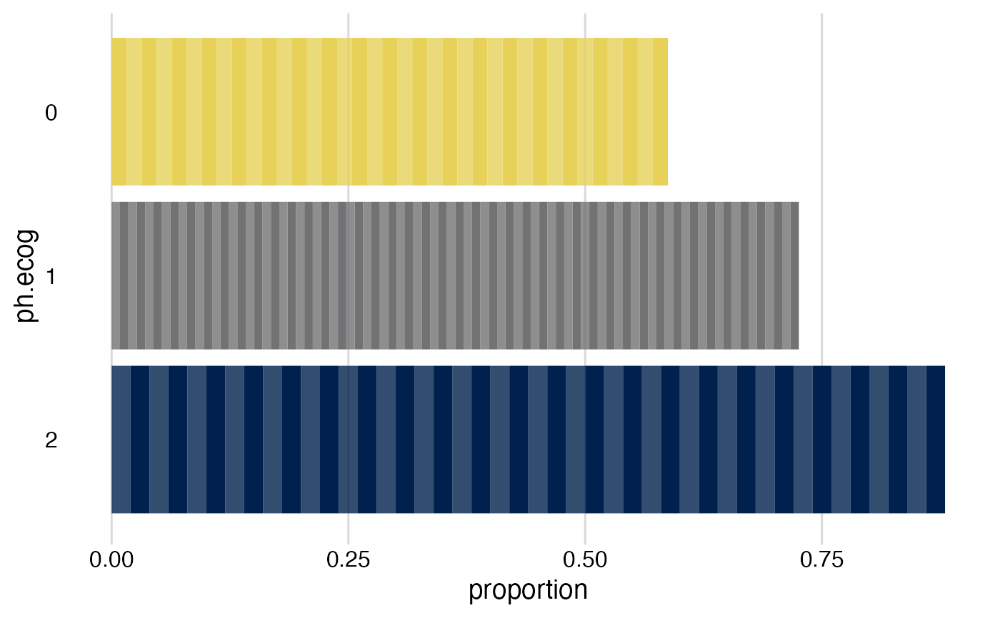

Plot bars of proportions that consist of "bricks" showing individual observations.
brickchart(data, outcome, by, group, colors = NULL, guide = FALSE, ...)Data set.
Outcome expression, e.g., event == TRUE.
Exposure variable.
Optional: Grouping variable, e.g., an effect modifier.
Optional: Color list. Must be a list consisting of
two-element color code vectors with the dark and bright colors for each
level of the exposure variable (by).
Example: list(c("darkred", "red"), c("darkblue", "lightblue")).
If not provided, colors will be generated from the
viridis_pal palette.
Optional: Show legend? Defaults to FALSE. May not work
with ggplot version 3.3.4 or newer.
Optional: further arguments passed to the call of
facet_grid, used for group.
ggplot. Modify further with standard ggplot functions. The additional
variables label_outcomes (outcome count), label_total
(per-group total), and label_prop (proportion) can also be accessed.
See example.
data(cancer, package = "survival")
cancer <- cancer %>%
tibble::as_tibble() %>%
dplyr::mutate(sex = factor(sex, levels = 1:2,
labels = c("Men", "Women")))
cancer %>%
dplyr::filter(ph.ecog < 3) %>% # drop missing/near-empty categories
brickchart(outcome = status == 2,
by = ph.ecog)

# Stratified version
# Note- Color fill may be off with ggplot v3.3.4+ if guide = TRUE
cancer %>%
dplyr::filter(ph.ecog < 3) %>%
brickchart(outcome = status == 2,
by = ph.ecog,
group = sex) +
# Modify graph with standard ggplot functions
# Refer to axes before flipping x <-> y. Here, y is horizontal:
ggplot2::labs(y = "Risk (cumulative incidence)",
fill = "ECOG status", # Color label
title = "Mortality by ECOG performance status") +
# Themes refer to axes as shown--'y' is now vertical
ggplot2::theme(axis.title.y = ggplot2::element_blank()) +
# add label
geom_text(
mapping = aes(
label = paste0(round(label_prop * 100), "%"),
y = label_prop + 0.05))
#> Error in geom_text(mapping = aes(label = paste0(round(label_prop * 100), "%"), y = label_prop + 0.05)): could not find function "geom_text"